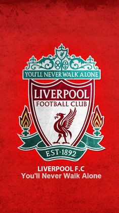

Liverpool
Liverpool은 리버풀 FC는 잉글랜드 머지사이드 주 리버풀을 연고지로 둔 프리미어 리그의 축구 클럽이다. 또한, 영국 유일의 빅 이어 영구 소장 클럽[8]이자 UEFA 챔피언스 리그 5회, 1부 리그 18회 우승을 차지한 잉글랜드 최고의 명문 구단이기도 하다.
지금이야 리버풀 이야기를 할 때 빼놓을 수 없는 것이 클럽의 상징과도 같은 붉은색이고, 100년이 넘는 역사상 대부분의 기간 동안 그러했으나, 19세기 말 갓 창단한 리버풀의 유니폼은 초창기 에버튼의 그것과 유사한 파랑-하양 디자인을 따랐다.[11] 물론 이 유니폼은 그리 오랜 시간이 지나지 않아 폐기되었으며, 1894년에 리버풀 시의 상징색이기도 한 빨강을 처음으로 유니폼 디자인에 채용하였다. 이때부터 1964년까지, 오늘날 맨체스터 유나이티드의 유니폼과 흡사하다고 할 수 있는 빨강(상의)-하양(하의) 디자인을 고수하던 리버풀은 당시 감독이던 빌 샹클리의 제안으로 하의와 스타킹까지 붉은색으로 물들인다.